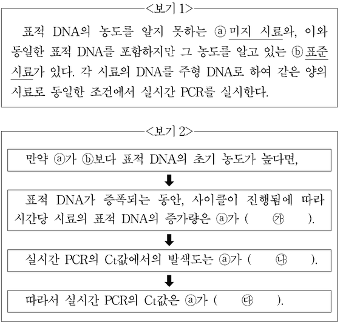

PCR
지문을 먼저 읽고, 이해가 막히는 문단에서 ‘그림으로 보기’를 누르세요. 그림은 문단을 따라 바뀝니다.
1문단1993년 노벨 화학상은 중합 효소 연쇄 반응(PCR)을 개발한 멀리스에게 수여된다. 염기 서열을 아는 DNA가 한 분자라도 있으면 이를 다량으로 증폭할 수 있는 길을 열었기 때문이다. PCR는 주형 DNA, 프라이머, DNA 중합 효소, 4종의 뉴클레오타이드가 필요하다. 주형 DNA란 시료로부터 추출하여 PCR에서 DNA 증폭의 바탕이 되는 이중 가닥 DNA를 말하며, 주형 DNA에서 증폭하고자 하는 부위를 표적 DNA라 한다. 프라이머는 표적 DNA의 일부분과 동일한 염기 서열로 이루어진 짧은 단일 가닥 DNA로, 2종의 프라이머가 표적 DNA의 시작과 끝에 각각 결합한다. DNA 중합 효소는 DNA를 복제하는데, 단일 가닥 DNA의 각 염기 서열에 대응하는 뉴클레오타이드를 순서대로 결합시켜 이중 가닥 DNA를 생성한다.
2문단PCR 과정은 우선 열을 가해 이중 가닥의 DNA를 2개의 단일 가닥으로 분리하는 것으로 시작한다. 이후 각각의 단일 가닥 DNA에 프라이머가 결합하면, DNA 중합 효소에 의해 복제되어 2개의 이중 가닥 DNA가 생긴다. 일정한 시간 동안 진행되는 이러한 DNA 복제 과정이 한 사이클을 이루며, 사이클마다 표적 DNA의 양은 2배씩 증가한다. 그리고 DNA의 양이 더 이상 증폭되지 않을 정도로 충분히 사이클을 수행한 후 PCR를 종료한다. 전통적인 PCR는 PCR의 최종 산물에 형광 물질을 결합시켜 발색을 통해 표적 DNA의 증폭 여부를 확인한다.
3문단PCR는 시료의 표적 DNA 양도 알 수 있는 실시간 PCR라는 획기적인 개발로 이어졌다. 실시간 PCR는 전통적인 PCR와 동일하게 PCR를 실시하지만, 사이클마다 발색 반응이 일어나도록 하여 누적되는 발색을 통해 표적 DNA의 증폭을 실시간으로 확인할 수 있다. 이를 위해 실시간 PCR에서는 PCR 과정에 발색 물질이 추가로 필요한데, ‘이중 가닥 DNA 특이 염료’ 또는 ‘형광 표식 탐침’이 이에 이용된다. ㉠이중 가닥 DNA 특이 염료는 이중 가닥 DNA에 결합하여 발색하는 형광 물질로, 새로 생성된 이중 가닥 표적 DNA에 결합하여 발색하므로 표적 DNA의 증폭을 알 수 있게 한다. 다만, 이중 가닥 DNA 특이 염료는 모든 이중 가닥 DNA에 결합할 수 있기 때문에 2개의 프라이머끼리 결합하여 이중 가닥의 이합체(二合體)를 형성한 경우에는 이와 결합하여 의도치 않은 발색이 일어난다.
4문단㉡형광 표식 탐침은 형광 물질과 이 형광 물질을 억제하는 소광 물질이 붙어 있는 단일 가닥 DNA 단편으로, 표적 DNA에서 프라이머가 결합하지 않는 부위에 특이적으로 결합하도록 설계된다. PCR 과정에서 이중 가닥 DNA가 단일 가닥으로 되면, 형광 표식 탐침은 프라이머와 마찬가지로 표적 DNA에 결합한다. 이후 DNA 중합 효소에 의해 이중 가닥 DNA가 형성되는 과정 중에 탐침은 표적 DNA와의 결합이 끊어지고 분해된다. 탐침이 분해되어 형광 물질과 소광 물질의 분리가 일어나면 비로소 형광 물질이 발색되며, 이로써 표적 DNA가 증폭되었음을 알 수 있다. 형광 표식 탐침은 표적 DNA에 특이적으로 결합하는 장점을 지니나 상대적으로 비용이 비싸다.
5문단[A] 실시간 PCR에서 발색도는 증폭된 이중 가닥 표적 DNA의 양에 비례하며, 일정 수준의 발색도에 도달하는 데 필요한 사이클은 표적 DNA의 초기 양에 따라 달라진다. 사이클의 진행에 따른 발색도의 변화가 연속적인 선으로 표시되며, 표적 DNA를 검출했다고 판단하는 발색도에 도달하는 데 소요된 사이클을 Ct값이라 한다.
6문단표적 DNA의 농도를 알지 못하는 미지 시료의 Ct값과 표적 DNA의 농도를 알고 있는 표준 시료의 Ct값을 비교하면 미지 시료에 포함된 표적 DNA의 농도를 계산할 수 있다.
7문단PCR는 시료로부터 얻은 DNA를 가지고 유전자 복제, 유전병 진단, 친자 감별, 암 및 감염성 질병 진단 등에 광범위하게 활용된다. 특히 실시간 PCR를 이용하면 바이러스의 감염 여부를 초기에 정확하고 빠르게 진단할 수 있다.
[A]를 바탕으로 <보기1>의 실험 상황을 가정하고 <보기2>와 같이 예상 결과를 추론하였다. ㉮～㉰에 들어갈 말로 적절한 것은?
